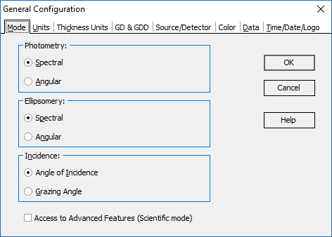

Data Display Modes
OptiChar provides users with the flexibility to represent data either arranged by wavelength or by angle of incidence, corresponding to the Spectral and Angular data display modes, respectively. Users can select their preferred mode in the Mode page of the Configuration dialog.

In OptiChar, modes can be adjusted independently for photometric and ellipsometric measurements, enabling simultaneous data processing from devices like a spectrophotometer and an angular ellipsometer.
In the Spectral mode:
All Measurement spreadsheets are organized into pages.
Each page corresponds to a specific angle of incidence.
Each page contains data for different wavelengths.
In the Angular mode:
All Measurement spreadsheets are also organized into pages.
Each page corresponds to a certain wavelength.
Each page contains data for different angles of incidence.
The selection of a display mode in OptiChar significantly influences how coating characteristics are visualized:
In the Spectral mode:
The function argument used for plotting is the wavelength.
This means that each curve on the graph represents measurements taken at different angles of incidence.
In the Angular mode:
The function argument used for plotting is the angle of incidence.
In this case, each curve on the graph corresponds to different wavelengths.
Due to this difference, the functionality of some editing tools is modified accordingly. For example, when editing a measurement file in Spectral mode, you can adjust the number of angles of incidence using the Angles button, which is accessible from the Edit menu. In Angular mode, the Angles button is replaced by the Wavelengths button, which offers similar functionality.
The current display mode setting is shown in the General Information window, which can be accessed from the View menu.
You can switch between Angular and Spectral modes using the Configuration Options menu. In most graphic windows, you can right-click to access the popup menu, allowing you to switch between modes.
When you switch between modes, the data representation is automatically updated throughout all OptiChar windows.
Additionally, it is possible to select a different convention for presenting light incidence. This can be expressed as the Angle of Incidence measured from the normal to the coating, or as a Grazing Angle measured from the coating surface. The Grazing Angle presentation is more commonly used in EUV and X-ray applications.
The Access to Advanced Features (Scientific mode) checkbox controls the availability of commands that are not normally visible, even in Expert mode.
Note: Scientific options are used for the further development of the software and algorithms. They can be unstable, and the results should be verified additionally. Use these options only if you are an expert!